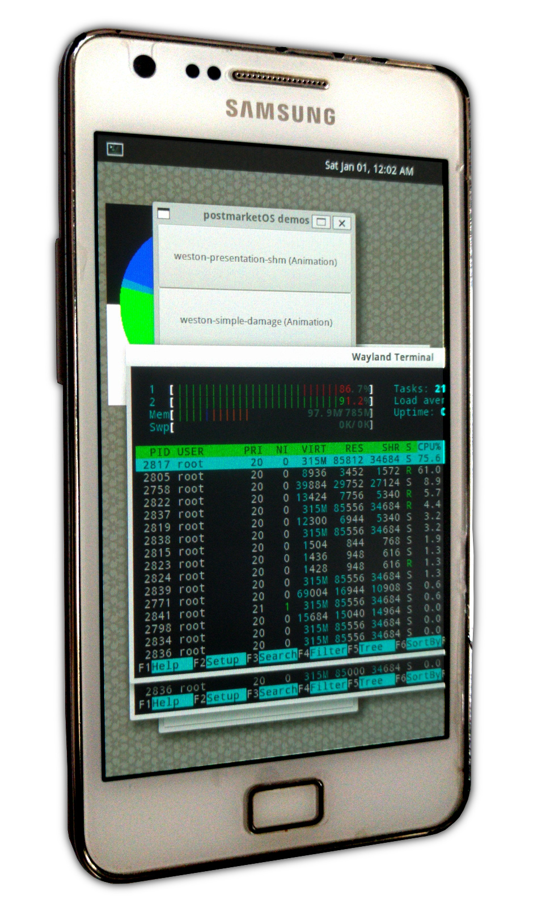

Samsung Galaxy SII (samsung-i9100)
|

First photo ever released of postmarketOS (from the original introduction post ). |
|
| Manufacturer | Samsung |
|---|---|
| Name | Galaxy S II |
| Codename | samsung-i9100 |
| Released | 2011 |
| Category | testing |
| Original software | Android 2.3.4 |
| Hardware | |
| Chipset | Exynos 4210 Dual |
| CPU | Dual-core 1.2 GHz Cortex-A9 |
| GPU | Mali-400 MP4 |
| Display | 480x800 AMOLED |
| Storage | 16/32 GB |
| Memory | 1 GB |
| Architecture | armv7 |
| Unixbench Whet/Dhry score | 542.5 |
| USB Networking |
Works
|
|---|---|
| Flashing |
Works
|
| Touchscreen |
Works
|
| Display |
Works
|
| WiFi |
Works
|
| FDE |
Partial
|
| Mainline |
Partial
|
| Battery |
|
| 3D Acceleration |
Works
|
| Audio |
|
| Bluetooth |
|
| Camera |
|
| GPS |
|
| Mobile data |
|
| SMS |
|
| Calls |
|
| USB OTG |
|
| NFC |
|
| Accelerometer |
Works
|
|---|---|
| Magnetometer |
|
| Ambient Light |
|
| Proximity |
|
| Hall Effect |
|
| Ir TX |
|
|---|---|
| TrustZone |
|

{kind=link}
Contributors
- ollieparanoid
- veggie
- timbz
Device Owners
- Ashirviskas ( Notes: Samsung Galaxy S2+ (i9105))
- Debiansh ( Notes: Notes: Possible future test subject, bootloader unlocked, running Lineage OS 17.x)
- EnderNightLord
- Hacker420 ( Notes: LCD not working.)
- JonesV
- Koalp
- MartijnBraam
- Newblicious
- Ollieparanoid
- Onny
- Oxr463
- Rudloff
- Sputnik1973 ( Notes: No screen, no power button, no battery and maybe dead motherboard.)
- Tacokoneko ( Notes: Samsung Galaxy S II Epic 4G Touch (d710))
- Timbz
- TryzenAlpensky ( Notes: Has 2.. Both No Battery. 1 with broken digitizer)
- Veselcraft ( Notes: bad battery, 16 gb)
What does not work yet
- Audio
- Bluetooth
- Modem
- MHL (Video-out)
- See "Hardware specifications" for ideas how to get them working.
Installation
We're using the
heimdall-isorec
flash method, see
deviceinfo_flash_methods
for more information.
Enable ODIN (download) mode
- Turn off phone
- Connect USB cable
-
Hold
VOLUME_DOWN+HOME+POWERuntil you get the "Warning!!" screen -
Push
VOLUME_UPto continue to ODIN mode, as per the instructions appearing on the screen
Option #1: Install to the internal memory (easiest)
- Configure the image:
$ pmbootstrap init
Use the channel "edge", vendor "samsung", device codename "i9100". It is recommended to use the mainline kernel, with the Phosh UI, and the WiFi firmwares for the best experience, but you can customize it to your needs.
|
|
Not all the configurations will work. See What works to confirm your choice. |
- Build the image:
$ pmbootstrap install
- Flash the OS to the internal memory:
$ pmbootstrap flasher flash_kernel $ pmbootstrap flasher flash_rootfs
The phone will reboot between the two commands, make sure to re-enter the ODIN (download) mode to execute the last command. This one can take a very long time to start. Once the transfer is complete, the phone will reboot again and your phone should boot into PostmarketOS.
Option #2: Install to a SD card
- As above, configure the image with:
$ pmbootstrap init
- Insert the SD card and find its path
One way is to run
lsblk
in a terminal and find the path to the SD card (e.g.
/dev/sde
). In the following steps, we will use
/path/to/sdcard
as a placeholder, which you should adapt to your system.
- Install PostmarketOS to the SD card
$ pmbootstrap install --sdcard=/path/to/sdcard
- Insert the SD card into your Galaxy S2 and reboot. The system should boot (JonesV tested it with xfce4 and weston on 2020-08-20).
Option #3: Install from the recovery zip installer
- Install a recovery like TWRP on your device
- Configure the image
$ pmbootstrap init
- Prepare the installation
$ pmbootstrap install --android-recovery-zip
- Flash the image on the phone
$ pmbootstrap flasher --method=adb sideload
Option #4: Export the recovery zip into the eMMC's UMS partition over MTP and install from recovery
|
|
Tacokoneko used this method for Samsung Galaxy S II Epic 4G Touch (d710) when none of the above methods worked for their device. Tacokoneko has not been able to enable WiFi with either downstream or mainline kernels as of 2021-08-25, but most other features in What works and 3D acceleration are functional. |
|
|
Requirements:
|
- Update pmbootstrap
$ pmbootstrap pull
- Configure the image, select samsung i9100
$ pmbootstrap init
- Download, prepare and compress postmarketOS into a recovery package for TWRP
$ pmbootstrap install --android-recovery-zip
- Extract the required temporary recovery and kernel created by Lanchon on XDA Forums
$ unzip recovery-Lanchon-IsoRec-TWRP-2.8.7.0-20160113-i9100-\(by-arnab\).zip $ unzip kernel-Lanchon-20160406-cm-13.0-i9100.zip
-
Start the device in download mode (hold
VOLUME_DOWN+POWER->VOLUME_UPfor d710) -> plug device into PC -
Flash the temporary kernel and TWRP using
heimdall
$ heimdall flash --RECOVERY recovery-Lanchon-IsoRec-TWRP-2.8.7.0-20160113-i9100-\(by-arnab\)/isorec-ramdrive.cpio.lzo --KERNEL kernel-Lanchon-20160406-cm-13.0-i9100/boot.img --no-reboot
-
Unplug the device -> reboot to recovery (hold
VOLUME_UP+POWERfor d710)-> plug device back in -> in TWRP, mount -> disable MTP -> enable MTP -> back -
Export the pmbootstrap chroot contents and create a symlink to them in
/tmp/
$ pmbootstrap export
-
Change directory to the location of
pmos-samsung-i9100.zip
$ cd $(dirname $(readlink /tmp/postmarketOS-export/pmos-*.zip))
- Use an MTP client, for example gvfs-mtp with GNOME , to mount the device's eMMC UMS partition (virtual SD card) filesystem. If the one included with your Desktop Environment isn't working with this device, keep trying other MTP clients until you find one that does. The path it is mounted to may vary for you.
$ cp pmos-samsung-i9100.zip /run/user/1000/gvfs/mtp:host=samsung_GT-I9100_0123456789ABCDEF/eMMC/
- When the transfer is complete, in TWRP, install -> eMMC -> select pmos-samsung-i9100.zip -> swipe to flash postmarketOS into DATAFS
- When complete, reboot to download mode and flash the postmarketOS kernel and recovery, overwriting the temporary ones
$ pmbootstrap flasher flash_kernel
- When complete, the device will reboot into postmarketOS
Mainline kernel
The Galaxy SII can be used with the mainline kernel for Exynos devices, packaged by PostmarketOS. Simply choose the mainline kernel when running pmbootstrap init.
Firmware files
When running "pmbootstrap init", it will ask you if you want to enable the "device-samsung-i9100-nonfree-firmware" package. Write "y" to be able to use the embedded WiFi chip.
U-Boot bootloader (legacy)
Sekilsgs2 on Github created a u-boot bootloader port , based on the work done by the user astarasikov at this repository . It is possible to use it with PostmarketOS but it requires some things to be done by hand.
-
In
pmbootstrap init, addu-boot-samsung-i9100to the list of extra packages to enable.
-
Run
pmbootstrap installto build the image.
- Flash the OS using one of the methods listed above.
- Now, we want both u-boot and the kernel to be installed to the same partition (KERNEL). So you need to concatenate the two files and flash the result:
$ cp ~/.local/var/pmbootstrap/chroot_rootfs_samsung-i9100/boot/u-boot.bin /tmp/u-boot-with-kernel.img $ dd if=~/.local/var/pmbootstrap/chroot_rootfs_samsung-i9100/boot/vmlinuz-dtb of=/tmp/u-boot-with-kernel.img bs=512K seek=1 conv=notrunc $ heimdall flash --KERNEL /tmp/u-boot-with-kernel.img
Once flashed, the phone will reboot and you should see u-boot appear. Configuring the boot options is not trivial as it can only be done by editing the source code (file:
include/configs/galaxys2.h
). The critical part for me was to change boot parameters in the section "boot_android" to something like this:
root=/dev/mmcblk1p1 rw rootfstype=ext4 rootwait init=/sbin/init ;
Where
/dev/mmcblk1p1
was the ext4 partition with the root filesystem on the sd-card.
User:Onny is interested in porting the i9100 u-boot patches to newer versions of u-boot but currently u-boot fails with the newer s5p_sdhci driver introduced in newer versions, see Github issue here .
Sekilsgs2 is also working on (March 2020) supporting the Galaxy S2 in the latest u-boot version.
TALUAtGitHub has a recent commit (March 2020) git commit that might be helpful [1]
Usage
Wifi
- Create conf for wpa_supplicant
$ wpa_passphrase "SSID" "password" > wifi
Note : If you are connecting to a hidden wireless network, make sure to add line "scan_ssid=1" after the ssid line in your generated conf file
- Connect to wifi AP
$ sudo wpa_supplicant -i wlan0 -c wifi &
- Get ip address from dhcp server (in another terminal)
$ sudo udhcpc -i wlan0
To set wifi connection to start automatically on boot, please refer here wifi
Modem
Using Ofono: Best way seems to get Samsung IPC modem support from the patchset https://lists.ofono.org/pipermail/ofono/2012-September/013766.html (but it was not accepted) and does not build https://github.com/tssk/pmbootstrap/commits/device-samsung-i9100_modem . I would appreciate help from someone that understands C.
Second idea was to build Andoird RIL + Samsung RIL and get ofono working with ofono-ril support - https://redmine.replicant.us/projects/replicant/wiki/Samsung-RIL .
GPS
https://univers-libre.net/posts/galaxy-s2-gps-on-replicant.html
https://redmine.replicant.us/projects/replicant/wiki/GSD4t
https://github.com/mnalis/gsd4t_parser
https://redmine.replicant.us/boards/21/topics/897
Setting the hardware clock
If you have already setup chrony and if your hardware clock doesn't have the time set you can set it with,
localhost:~# hwclock -w # Write the current system time to the hardware clock
Setting the display brightness
To adjust display brightness write a value between 0-255 to file given below,
localhost:~# echo 0 > /sys/class/backlight/panel/brightness #set the display to its lowest brightness
localhost:~# echo 255 > /sys/class/backlight/panel/brightness #set the display to maximum brightness
Reading Accelerometer sensor
Accelerometer sensor data can read from following file
localhost:~$ cat /sys/class/accelerometer/accelerometer/acc_file
Hardware specifications
|
|
This device is supported by Replicant . With some more research we should be able to get most stuff running with their free software userland drivers. |
SoC
Samsung Exynos 4 Dual 45 nm (GT-I9100, SHW-M250S/K/L) source
CPU
1.2 GHz dual-core ARM Cortex-A9 (GT-I9100, GT-I9105, GT-I9100G, SHW-M250S/K/L) source
GPU
ARM Mali-400 MP4 (GT-I9100, SHW-M250S/K/L) source
WiFi / Bluetooth / FM radio
Broadcom BCM4330 (SWB-B42) Bluetooth 4.0 Dual Band WLAN FM source source
Driver? - https://wireless.wiki.kernel.org/en/users/drivers/brcm80211
Firmware - https://android.googlesource.com/platform/hardware/broadcom/wlan/+/master/bcmdhd/firmware/bcm4330/
Memory
1 GB RAM [2]
Storage
16 GB or 32 GB flash memory [3]
Removable storage
microSD (up to 128 GB SDXC) [4]
Modem
- XMM6260 [5]
- aka "X-GOLD 626", and it's also used in Nexus 7 [6]
- it seems to be supported by the mainline kernel (big questionmark here) [7]
Audio
- Yamaha MC1N2
- The Android kernel exposes the alsa API.
- But when you play with the volume sliders in alsamixer, nothing happens
- /dev/snd/hwC0D0 implements hardware-specific controls (via ioctl) [8] (check the link for a free software Android userspace driver)
- We could write a daemon, that watches the alsa sound levels, and unmutes channels (speaker, headphones etc.) via hwC0D0 as necessary. (This will only work with the downstream kernel, the sound is probably not implemented in the upstream kernel at all?)
- Maybe all this is overkill and the strategy from Audio works as well.
Light / proximity sensor
the CM3663 sensor is being use and there is no driver in mainline. A downstream driver is available here .
MHL
- Fairchild FSA3200UMX switch [9]
- Maxim MAX8997 PMIC [10]
- Silicon Image 9244 transmitter [11]
- Should be all supported to a certain extent in mainline 4.15 kernel (of course the device is still stuck to 3.0 for the time being)
Serial / UART
It is not exactly clear yet where to find UART / serial on the device. For possible location see second image below (red rectangle). Nevertheless a good instruction on hardware teardown is available here . Follow this guide until step 5, than proceed with removing the black cover from the circuit board (see first image below).
-

Remove black cover (it is only glued)
-

UART possibly located in this field (red rectangle)
Photos
- Initramfs asking for the password via telnet
- Weston with various programs opened
- postmarketOS demo menu (XWayland)
- Firefox (XWayland)
- Weston-smoke demo
- Weston-smoke demo running on a d710
- xfce-ui running on i9100
{kind=link}
{kind=link}
{kind=link}
{kind=link}
{kind=link}
{kind=link}
{kind=link}
See also
- pmaports!1598 : initial MR with mainline, has serial output instructions
- Galaxy S2 Replicant port status update
- Replicant wiki device page
- Device package
- netcat installation method